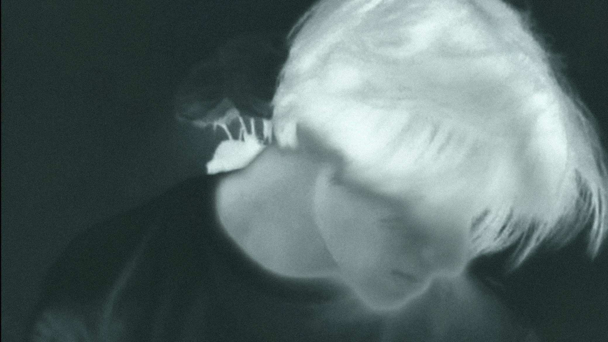

REVERSE
Color, stereo sound, 0'27, 2024
Capturing the beauty and diversity of nature through images and videos, highlighting the importance of preserving our natural environment is what Reverse expresses.
